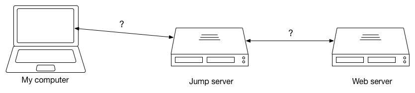
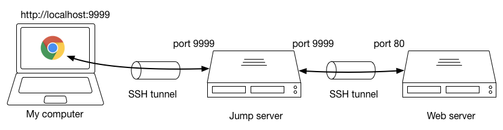

- Sun 31 July 2016
- programming
- #ssh
SSH 埠映射 (SSH port forwarding)
SSH 的功能很多，除了單純的連線遠端登入以外， 也可以在本地端和遠端的伺服器建立隧道 (tunnel) 並且進行埠映射 (port forwarding)，將訪問本地端的封包透過隧道轉送到遠端的機器上。
範例情境
假設我們正在開發一個網站，因為安全性問題，在正式發佈以前這個網站只能透過某個跳板機連線。若想用自己電腦上的瀏覽器連線測試，就必須想辦法先連到跳板機再到網站伺服器上。這該如何做到？

首先，我們在終端機輸入以下指令：
$ ssh -L 9999:localhost:9999 user@jump_server ssh -L 9999:localhost:80 user@web_server
指令前半段 ssh -L 9999:localhost:9999 user@jump_server 的意思是，我們在本地端建立一個埠映射，所有要連線到本地 port 9999 的封包都會被轉送到 jump_server 上的 port 9999，我們可以把這個叫做 SSH 隧道 (SSH tunnel)。而後半段 ssh -L 9999:localhost:80 user@web_server 意思差不多，就是建立 jump_server 到 web_server 的 ssh tunnel。
隧道建立好之後，我們就可以在瀏覽器上的網址列輸入localhost:9999。這時瀏覽器會送出請求到本地端的 port 9999，埠映射會把請求送到跳板機上，而跳板機上的埠映射又把請求繼續轉送到真正的網頁伺服器上，如下圖所示。

如此一來，我們就能夠安全的用自己的電腦測試網頁了。